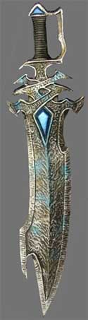

INTRODUZIONE
Gli Gnomi del Profondo sono misteriosi abitanti delle profondità rocciose
dei cui usi e costumi poco è noto sulla superficie. Sono una razza di gnomi
caparbia ed ostinata abituata a vivere in un ambiente incredibilmente ostile e
pericoloso. Spesso considerati malvagi, avari e crudeli come gli Elfi Scuri od i
Duergar, questa reputazione si basa su un errore di fondo non potendo gli Gnomi
del Profondo essere accumunati a tali razze di indole malvagia. In realtà,
infatti, gli Gnomi del Profondo hanno generalmente un'attitudine neutrale ed il
loro carattere schivo è dettato fondamentalmente dai rapporti che sono abituati
ad intrattenere con gli esseri malvagi delle profondità. Gli Gnomi del Profondo
hanno un legame naturale strettissimo, quasi magico, con il sottosuolo ed i suoi
frutti, in particolare le gemme. Costoro sono i migliori minatori ed
intagliatori di gemme e solo costoro sono in grado di utilizzarle in modi
sorprendenti ed unici. Questa è del resto la caratteristica che obbliga questi
gnomi a vivere nel sottosuolo ed a scavare miniere nelle profondità più remote
della terra, sfruttando la loro dimensione ridotta per creare tunnel di minore
grandezza e quindi di maggiore stabilità. Gli appartenenti a questa razza non
sono solo ottimi minatori ed intagliatori di gemme, gli Gnomi del Profondo
possono essere bravissimi armaioli e corazzieri e le loro creazioni, nonostante
siano meno comuni, possono compararsi a quelle dei nani.
LA COMUNITÀ SVIRFNEBLIN
Gli Gnomi del Profondo sono soliti costituire grosse comunità sotterranee,
preferendole ai piccoli insediamenti. Infatti, a differenza degli Gnomi che
vivono in superficie i quali tendono a costituire piccoli villaggi, gli Gnomi
del Profondo prediligono comunità di dimensioni maggiori costituite in zone ben
difendibili che garantiscano maggiore difesa nei confronti dei potenti nemici
che vagano nelle caverne del sottosuolo. Al tempo stesso, però, le comunità di
Gnomi del Profondo, che possono contare facilmente anche qualche migliaio di
abitanti, sono spesso molto distanti le une dalle altre rappresentando vere e
proprie isole
separate. E' comune, infatti, che uno Gnomo del Profondo viva
la sua intera esistenza senza venire mai a contatto con altri membri della sua
razza che siano
provenienti da una comunità diversa da quella di origine. Per tale motivo, le
tradizioni, le festività e le ricorrenze assumono quasi sempre una dimensione
locale, così come la forma di governo e di amministrazione della comunità che
può variare totalmente da una cittadella ad un'altra. Un aspetto tipico della
società degli Svirfneblin è rappresentato dalla netta distinzione tra le
mansioni affidate ai maschi rispetto a quelle di competenza delle femmine. Ai maschi Svirfneblin è affidato in via esclusiva il compito di lavorare nelle miniere e
di difendere la comunità come guerrieri. Le femmine, invece, sono principalmente
devote alla cura della famiglia e della casa anche se alcuni rappresentanti più
dotati possono intraprendere carriera come utenti di magia, come vagabondi o
come ministri di culto.
Questa separazione dei ruoli risponde ad una doppia esigenza ossia, da un lato,
la cura della famiglia resa necessaria da un tasso di natalità fra i più bassi
delle razze semi-umane, dall'altro, la pericolosità delle zone sotterranee
frequentate dagli Gnomi del Profondo. Altro compito tipicamente femmine è la
coltivazione dei funghi giganti commestibili che rappresentano un elemento
essenziale della dieta degli gnomi. Oltre alle coltivazioni di funghi, dalle
quali le comunità Svirfneblin traggono in via principale la loro sussistenza,
gli Gnomi del Profondo sono soliti allevare piccoli gruppi di animali
sotterranei. Essendo, inoltre, questi gnomi ghiotti di pesce, è estremamente
comune che nelle loro comunità vi siano forme di acquacoltura realizzate in
laghi o stagni sotterranei. Altra caratteristica tipica dell'alimentazione degli
Gnomi del Profondo è la tendenza a salare moltissimo le vivande utilizzando il
sale minerale trovato nelle miniere, tanto che alcune pietanze sono così salate
da risultare non commestibili per gli abitanti della superficie. Gli Gnomi del
Profondo hanno, inoltre, due bevande tipiche. La prima, chiamata Sassài, è una
miscela di succo di fungo concentrato, distillato con grossi cristalli di sale
ed arricchito e addensato con gelatina di pesce che gli conferisce un forte e
tipico puzzo. Si tratta di una bevanda di ogni giorno molto apprezzata dagli
Gnomi del Profondo e dal contenuto alcolico abbastanza elevato. Il suo gusto è
così deciso e particolare che raramente è bevuta da esponenti di altre razze. i
quali la trovano solitamente vomitevole. L'altra bevande è conosciuta con il
nome di Gogondìa. Si tratta di una bevanda costosa e bevuta con parsimonia od in
occasioni speciali dagli stessi gnomi. Frutto della premitura di bacche
sotterrane e vigneti montani il metodo esatto della sua produzione è un segreto
custodito gelosamente dagli Gnomi del Profondo. Dal colore rosso intenso, questa
bevanda è rigorosamente conservata in bottiglie o contenitori metallici, unico
materiale che, a detta degli Svirfneblin, è in grado di preservarne il sapore.
Estremamente alcolica, si dice possa considerarsi tra i vini più pregiati
esistenti e le sue produzioni più particolari possono valere una vera fortuna.
Le cittadelle degli gnomi del profondo sono rappresentate da un dedalo di
cunicoli e caverne collegate tra loro da stretti corridoi e scale ricavate nelle
pietra. Solitamente la cittadella dirama i suoi cunicoli partendo dalla più
grande grotta che diviene anche il centro amministrativo della comunità. Quando
gli Gnomi del Profondo trovano all'interno delle caverne una stalagmite abbastanza grande, costoro amano scavare la loro dimora all'interno della stessa.
Solitamente tale possibilità è concessa solo ai membri nobili o famosi della
comunità per la rarità di tali grandi escrescenze rocciose.
PSICOLOGIA DEGLI GNOMI DEL PROFONDO
Gli Svirfneblin sono solitamente silenziosi e diffidenti. Si tratta di
creature molte sospettose che prendono tutte le cose oltremodo sul serio,
carattere sicuramente forgiato dai molteplici pericoli di una vita nelle cavità
sotterranee a contatto con esseri malvagi ed astuti. Troppo spesso, infatti,
solo l'uso della massima cautela ed il continuo sospetto hanno permesso a queste
creature di sopravvivere. Gli Gnomi del Profondo non nutrono il desiderio di
incontrare creature di altre razze o di conoscere nuove e differenti culture.
Non a caso, gli Gnomi del Profondo appaiono spesso arcigni, cupi e pessimisti
nei confronti delle altre razze. Per questi motivi, i membri di questa razza
sono oltremodo lenti a concedere la loro fiducia, ma quando ciò avviene costoro
sanno dimostrarsi leali, sinceri e dotati di spirito di sacrificio.
Gli Gnomi del Profondo sanno valutare ed apprezzare il fine artigianato, specie
quando si parla della produzione di armi ed armature. Se ciò è vero, la più
radicata passione di queste creature è quella per le gemme preziose delle quali
sanno apprezzare purezza, caratura e luminosità. Passione che appare contrastare
con il loro carattere cupo e misterioso. Gli Svirneblin possono essere definiti
gran lavoratori che cercano continuamente di raggiungere i livelli più alti
dell'eccellenza produttiva impegnandosi con diligenza, con industriosità e senza
risparmiare energie. Corrisponde, infatti, ad un motto classico degli Gnomi del
Profondo che quando si deve fare qualcosa è necessario che sia fatto bene,
indipendentemente dal tempo e dall'impegno richiesto.
Per la qualità delle loro manifatture e per la loro diffusa tendenza a
conformarsi alle leggi e a rispettare gli accordi sono spesso ammessi ed
accettati di buon grado come mercanti anche nelle comunità più ostili e
isolazioniste del sottosuolo.


Gli Gnomi del Profondo hanno una pelle del colore della roccia che varia da tonalità di grigio a tonalità di marrone. Costoro hanno occhi grigi ed in rare occasioni neri come il carbone. Per determinare il colore della pelle, dei capelli e degli occhi di uno Gnomo del Profondo è possibile tirare i dadi previsti nella seguente tabella:
| Tiro (1d100) | Pelle e Capelli | Occhi |
| 1-50 | Grigio Comune | Grigio Comune |
| 51-70 | Grigio Ambrato | Grigio Cenere |
| 71-82 | Grigio Ardesia | Grigio Ambrato |
| 83-87 | Grigio Scuro | Glicine |
| 88-100 | Grigio Cenere | Carbone |
Si noti che i colori più rari, ossia il Grigio Cenere per la pelle ed i capelli ed il Carbone per gli occhi. Per tale motivo un personaggio della razza degli Gnomi del Profondo otterrà un bonus +1 a tutte le prove di appearance effettuate nei confronti di un altro membro della medesima razza per ogni tratto somatico raro posseduto, inoltre, se possiede tutti i suddetti tratti somatici rari costui riceverà anche un bonus di +1 a tutte le prove di carisma effettuate nei confronti di un altro membro della medesima razza.


|
MODIFICATORE RAZZIALE ALLE ABILITÀ |
| Bonus di +1 ad Intelligenza e +1 a Destrezza |
| Penalità di -1 a Forza |
|
PUNTEGGI MINIMI E MASSIMI RAZZIALI PER LE ABILITÀ |
||
| ABILITÀ | MINIMO | MASSIMO |
| Forza | 3 | 17 |
| Intelligenza | 8 | 18 |
| Saggezza | 7 | 18 |
| Costituzione | 5 | 17 |
| Carisma | 5 | 18 |
| Destrezza | 9 | 18 |
| MODIFICATORE BASE AI PUNTI ESPERIENZA | 5% malus |
|
ACCESSO ALLE VARIE CLASSI |
|
| CLASSE | LIVELLO MASSIMO |
| WARRIOR - Fighter | 13° livello |
| WARRIOR - Archer | 12° livello |
| WARRIOR - Defender | 12° livello |
| MAGE - Wizard | 15° livello |
| MAGE - Alchemist | 14° livello |
| MAGE - Arcanologist | 14° livello |
| MAGE - Demonologist | 13° livello |
| MAGE - Erudite | 13° livello |
| MAGE - Magister Formulae | 12° livello |
| ROGUE - Thief | 15° livello |
| ROGUE - Acrobat | 14° livello |
| ROGUE - Assassin | 13° livello |
| ROGUE - Brigand | 13° livello |
| ROGUE - Researcher | 14° livello |
|
ACCESSO ALLE CLASSI MULTIPLE |
| WARRIOR/ROGUE |
| MAGE/ROGUE |
|
ABILITÀ DEI LADRI |
PUNTEGGIO INIZIALE |
| Pick Pocket | 15 % |
| Open Lock | 15 % |
| Find/Rem. Trap | 10 % |
| Move Silently | 13 % |
| Hide in Shadows | 7 % |
| Detect Noise | 22 % |
| Climb Wall | 40 % |
| Read Languages | 5 % |
| FATTORE MOVIMENTO BASE | 6 esagoni |
| SENTIRE RUMORI | 22 % |
|
DIMENSIONI E PESO |
SISTEMA DI CALCOLO DELL'ALTEZZA E DEL PESO |
| Altezza del maschio | 81 cm. + 1 cm. per punto di costituzione + 2d6 cm. |
| Altezza della femmina | 76 cm. + 1 cm. per punto di costituzione + 2d6 cm. |
| Peso del maschio | 33 kg. + 1 kg. per punto di costituzione + 2d4 kg. |
| Peso della femmina | 30 kg. + 1 kg. per punto di costituzione + 2d4 kg. |
|
CATEGORIA DI ETÀ |
ANNI |
| Starting Age | 25 + 1d6 |
| Childhood | 0 - 25 |
| Adolescence | 26 - 45 |
| Adulthood | 46 - 119 |
| Middle Age* | 120 - 179 |
| Old Age** | 180 - 249 |
| Venerable Age*** | 250 + |
| Maximum Age | 250 + 5d10 |
* Middle Age: I
personaggi di questa categoria di età perdono 1 punto di forza ed 1 punto di
costituzione, acquisiscono però 1 punto di intelligenza ed 1 punto di saggezza
(non potendo, in ogni caso, superare i massimi razziali).
** Old Age: I personaggi di questa categoria di età perdono 2 punti di
destrezza, 2 ulteriori punti di forza ed 1 ulteriore punto di costituzione,
acquisiscono però 1 ulteriore punto di saggezza (non potendo, in ogni caso,
superare i massimi razziali).
*** Venerable Age: I personaggi di questa categoria di età perdono 1
ulteriore punto di destrezza, di forza e di costituzione, acquisiscono però 1
ulteriore punto di intelligenza e di saggezza (non potendo, in ogni caso,
superare i massimi razziali).


| NOME | Creatura di Taglia Piccola |
| COSTO IN PUNTI CREAZIONE | NESSUNO - ACQUISIZIONE AUTOMATICA |
| REQUISITO PARTICOLARE | NESSUNO |
| DESCRIZIONE |
Gli Gnomi del Profondo sono
creature di dimensioni Small. Per
tale motivo, tutti i personaggi di questa razza saranno tenuti all'applicazione
delle seguenti regole: |
| NOME | Infravisione (21 metri) |
| COSTO IN PUNTI CREAZIONE | NESSUNO - ACQUISIZIONE AUTOMATICA |
| REQUISITO PARTICOLARE | NESSUNO |
| DESCRIZIONE |
Gli Gnomi del Profondo
posseggono, oltre alla normale forma di vista, l'infravisione entro
21 metri di raggio.
Perché l’infravisione funzioni occorre che si
al buio lontano da qualsiasi zona illuminata. Se una zona illuminata
si trova entro 30 metri di distanza dal personaggio ed illuminata da
una fonte luminosa capace di illuminare per un raggio superiore ai 3 metri
l’infravisione non si attiverà. Fonti luminose di minore intensità (come
una candela) impediscono l’attivazione dell'infravisione solo quando il
personaggio si trova all'interno della zona illuminata. Durante la notte
la luce della luna piena e quella della luna maggiore della metà non
permette l'attivazione dell’infravisione, la luce delle stelle e la luce
della luna minore della metà permettono invece l’infravisione. Si noti
che in foreste particolarmente fitte, dove non penetra molta luce, può
attivarsi l’infravisione anche con la luna piena. Gli occhi del
personaggio attivano l’infravisione in modo graduale ed automatico senza
che tale attività degli organi possa essere comandata: |
| NOME | Resistenza Naturale agli Effetti Mentali |
| COSTO IN PUNTI CREAZIONE | NESSUNO - ACQUISIZIONE AUTOMATICA |
| REQUISITO PARTICOLARE | NESSUNO |
| DESCRIZIONE |
Gli Gnomi del Profondo posseggono una naturale resistenza agli effetti mentali. Questa resistenza è pari al 20 % + 2 % per livello di esperienza. Si noti che questa resistenza può essere, con la mera forza del pensiero, annullata completamente dallo Gnomo del Profondo per l’intero round in questione (si considera una free action che impone una penalità di +1 all'iniziativa delle successive azioni). Normalmente, invece, questa resistenza è attiva e non può essere annullata qualora il personaggio non è sia in grado di pensare correttamente, come ad esempio quando è in coma, dorme, è stordito, ecc… Per resistenza mentale si intende una resistenza a tutte le forme di controllo e manipolazione della mente anche se basate sul fascino (si pensi anche a magie come charm, confusion, ecc...). Questa resistenza si applica anche a forme di paralisi che siano la conseguenza di effetti mentali non quindi su quelle di origini diversa quale la paralisi dovuta al veleno o all'effetto dell'energia negativa. Si noti, infine, che questa resistenza non difende il personaggio dagli effetti della paura che prevedano un tiro salvezza su coraggio e non su mente per essere evitati. |
| NOME | Percezione Sotterranea |
| COSTO IN PUNTI CREAZIONE | NESSUNO - ACQUISIZIONE AUTOMATICA |
| REQUISITO PARTICOLARE | NESSUNO |
| DESCRIZIONE |
Essendo abituati alla
vita nei sotterranei e nei tunnel, tutti gli Gnomi del Profondo hanno
sviluppato una capacità di percepire alcuni fenomeni legati alla roccia
ed al suo utilizzo. Per tale motivo, coloro che
possiedono questo talento razziale ottengono il seguente beneficio: |
| NOME | Sfruttare la Distrazione degli Avversari |
| COSTO IN PUNTI CREAZIONE | NESSUNO - ACQUISIZIONE AUTOMATICA |
| REQUISITO PARTICOLARE | PUNTEGGIO IN INTELLIGENZA ALMENO PARI AD 11 |
| DESCRIZIONE |
Essendo fisicamente di dimensioni ridotte gli Gnomi del Profondo hanno sviluppato una capacità combattiva unica. Costoro sono in grado, sfruttando la loro agilità, di divenire estremamente lesivi quando combattono con un avversario che non presta la massima attenzione nei loro confronti. Per tale motivo ogni volta che uno Gnomo del Profondo combatte in corpo a corpo contro un nemico che si trova in melee con un altra qualsiasi creatura avversaria, costui ottiene un bonus di +1 ai suoi danni (bonus che si considera a tutti gli effetti come dovuto alla forza dell'attaccante). In effetti lo Gnomo del Profondo ha imparato a sfruttare i necessari momenti di distrazione che la vittima ha quando è attenta alle mosse effettuate da altri avversari che si trovino a stretto contatto con lui (sempre che le stesse siano in grado di agire, non quindi ad esempio qualora siano paralizzate). Questo bonus può essere utilizzato su ogni attacco effettuato in corpo a corpo ed è cumulabile con il beneficio previsto dall'arte di combattimento "Arte del Ferire Gravemente". Lo Gnomo del Profondo può utilizzare questo talento solo quanto impugni armi in cui sono è almeno abile. Non subiscono il danno supplementare concesso da questo talento tutte le creature che non hanno parti vitali (non morti, costruiti, melme, piantiformi ecc...), inoltre il Dungeon Master può decidere di non permettere l'applicazione del danno aggiuntivo su creature che sebbene siano dotate di parti vitali non le abbiano facilmente accessibili o riconoscibili (lumache, vermi, ecc…). |
| NOME | Attitudine Mineraria |
| COSTO IN PUNTI CREAZIONE | 1 |
| REQUISITO PARTICOLARE | NESSUNO |
| DESCRIZIONE |
Alcuni Gnomi del
Profondo sono
particolarmente abili come minatori ed intagliatori di gemme, attività
che rappresentano una parte fondamentale delle loro comunità. Per tale motivo coloro che
possiedono questo talento razziale ottengono i seguenti benefici: |
| NOME | Bravura nella Forgia |
| COSTO IN PUNTI CREAZIONE | 1 |
| REQUISITO PARTICOLARE | NESSUNO |
| DESCRIZIONE |
Nonostante non abbiano
la fama dei fabbri nani, gli Gnomi del Profondo possono divenire eccellenti fabbri. Per tale motivo coloro che possiedono questo talento razziale ottengono il seguente beneficio: |
| NOME | Armi della Tradizione Svirfneblin |
| COSTO IN PUNTI CREAZIONE | 2 |
| REQUISITO PARTICOLARE | NESSUNO |
| DESCRIZIONE |
Gli Gnomi del
Profondo
hanno la propensione per l'utilizzo di alcune specifiche armi che da
secoli la loro razza utilizza in battaglia. In particolare, rientrano
nella tradizione degli
Gnomi del Profondo
le seguenti armi:
Pick Axe,
Footman's Pick,
Hammer, Balestra da Mano.
Per tale motivo coloro che possiedono questo talento razziale ottengono
i seguenti benefici: |
| NOME | Ingegnosità Superiore |
| COSTO IN PUNTI CREAZIONE | 2 |
| REQUISITO PARTICOLARE | NESSUNO |
| DESCRIZIONE |
Alcuni Gnomi del
Profondo sono
particolarmente ingegnosi. Per tale motivo coloro che
possiedono questo talento razziale ottengono i seguenti benefici: |
| NOME | Mente Speculativa |
| COSTO IN PUNTI CREAZIONE | 2 |
| REQUISITO PARTICOLARE | PUNTEGGIO IN INTELLIGENZA ALMENO PARI A 13 |
| DESCRIZIONE |
La mente degli
Gnomi del Profondo
è estremamente versatile e abituata ai processi mentali di tipo
speculativo. Per tale motivo coloro che
possiedono questo talento razziale ottengono i seguenti benefici: |
| NOME | Dominio della Roccia |
| COSTO IN PUNTI CREAZIONE | 3 |
| REQUISITO PARTICOLARE | PUNTEGGIO IN COSTITUZIONE ALMENO PARI A 12 |
| DESCRIZIONE |
Gli Gnomi del
Profondo hanno un legame speciale, quasi magico, con le rocce del
sottosuolo. Per tale motivo coloro che
possiedono questo talento razziale ottengono i seguenti benefici: |
| NOME | Attingere Potere dalle Gemme |
| COSTO IN PUNTI CREAZIONE | 3 |
| REQUISITO PARTICOLARE | APPARTENENZA AD UNA CLASSE DEGLI UTENTI DI MAGIA |
| DESCRIZIONE |
Gli Gnomi del
Profondo hanno un legame speciale, quasi magico, con le gemme. Per tale motivo coloro che
possiedono questo talento razziale ottengono i seguenti benefici: |
| NOME | Infondere il Potere delle Gemme |
| COSTO IN PUNTI CREAZIONE | 3 + 5% malus punti esperienza |
| REQUISITO PARTICOLARE | NESSUNO |
|
DESCRIZIONE
 |
Gli Gnomi del Profondo hanno un legame speciale, quasi magico, con le gemme. Alcuni di loro sono, dunque, in grado di infondere negli oggetti il potere delle gemme preziose. Nel mondo di Arelia, infatti, le gemme sono naturali catalizzatori di energia magica e di potere divino. Per tale motivo, le gemme possono avere un valore diverso ed addizionale rispetto al loro intrinseco valore economico. Per tale motivo gli Gnomi del Profondo che posseggono questo talento possono incastonare le gemme in alcuni loro oggetti per ottenere poteri speciali. In ogni caso, non tutte le gemme del tipo richiesto possono essere utilizzate con queste regole. Infatti, occorre che le stesse siano ritrovate, come accade per le gemme sacre, durante le missioni e le avventure effettuate dal medesimo Gnomo del Profondo che desidera utilizzarle. Ritrovare le gemme in questo modo, infatti, rappresenta un segno della volontà divina che ha permesso al personaggio di accumularle ed utilizzarle. Per tale motivo, queste regole non possono essere utilizzate su gemme recuperate in altro modo (ad esempio su gemme acquistate, recuperate con opere minerarie, barattate o ricevute in dono). È, invece, possibile utilizzare le gemme ritrovate nel su menzionato metodo il cui valore sia poi stato modificato utilizzando la competenza Gem Cutting solo qualora sia lo stesso Gnomo del Profondo ad operare la modifica sulla gemma. A seconda della tipologia di gemma, del suo valore e dell'oggetto su cui è incastonata la stessa potrà avere effetti differenti. Si noti che l'oggetto non diventerà in alcun modo magico in quanto solo lo Gnomo del Profondo che ha ritrovato la gemma sarà in grado di attivarne il relativo potere mentre nelle mani di un qualunque altro individuo, anche se si tratti di un diverso Gnomo del Profondo, l'oggetto non avrà alcun potere. Indipendentemente dai suoi effetti l'attivazione del potere della gemma costituisce sempre una free action ad attivazione somatica che non richiede il mantenimento della concentrazione ed impone una penalità di +3 al fattore iniziativa delle successive azioni. Tutti i poteri possono essere attivati una sola volta ogni 24 ore. Per gli effetti non istantanei la loro durata dipende dal livello di esperienza raggiunto dallo Gnomo del Profondo essendo lo stesso pari a 2 round + 1 round ogni 2 livelli di esperienza (3 round al 1° ed al 2° livello, 4 round al 3° ed al 4° livello, 5 round al 5° ed al 6° livello, e così via...) fino ad un massimo di 8 round a partire dall'11° livello di esperienza. Si noti, inoltre, che come regola di carattere generale uno Gnomo del Profondo può trasportare sulla sua persona (anche in un contenitore) al massimo uno di questi oggetti ogni 3 livelli di esperienza (1 oggetto dal 1° al 3° livello di esperienza, 2 oggetti dal 4° al 6° livello di esperienza) fino ad un massimo di 5 oggetti a partire dal 13° livello di esperienza. Qualora lo Gnomo trasporti sulla sua persona un numero superiore di questi oggetti il potenziale magico delle gemme andrà in conflitto neutralizzandosi ed impedendone l'attivazione fino a che tale situazione permarrà (si considerino a tal fine i solo oggetti utilizzabili dallo Gnomo del Profondo in questione). Si noti, inoltre, che una volta incastonata una gemma in un oggetto la sua rimozione, volta ad esempio ad una sua sostituzione con un'altra pietra, comporterà la distruzione della stessa che si sgretolerà all'atto della rimozione. Si noti, infine, che gli effetti saranno immediatamente interrotti qualora, per qualsiasi motivo, lo Gnomo del Profondo smetta di indossare l'oggetto durante l'efficacia degli stessi. La gemma può essere incastonata da un qualsiasi fabbro o armaiolo avente la competenza necessaria a creare il tipo di oggetto nel quale si desidera incastonare la gemma. Il procedimento ha una durata pari a 2d4 giorni ed il costo è pari a 3 monete d'oro + il 10% del valore comune dell'oggetto (arrotondando per eccesso) + il 5% del costo degli incantamenti se l'arma è incantata. In caso di mera sostituzione della gemma il tempo ed i costi saranno dimezzati (arrotondando per difetto).
Citrino, Granato, Opale di Fuoco, Rubino (poteri
del fuoco)
Acquamarina, Zaffiro d'Acqua, Tormalina, Topazio
Blu (poteri del freddo)
Ametrino, Morganite, Ametista (poteri di
resistenza magica)
Agata, Andalusite, Alessandrite, Topazio
(protezione divina)
Diamante (favore divino) - Effetto istantaneo |